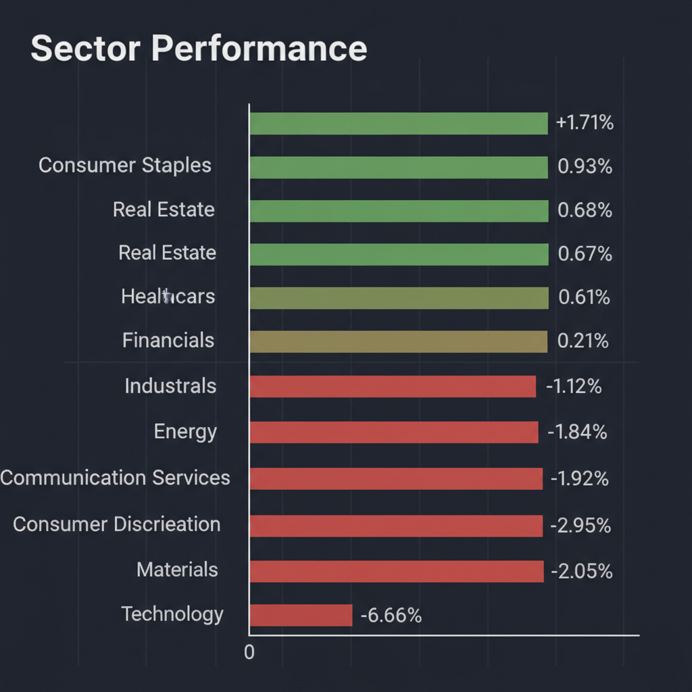
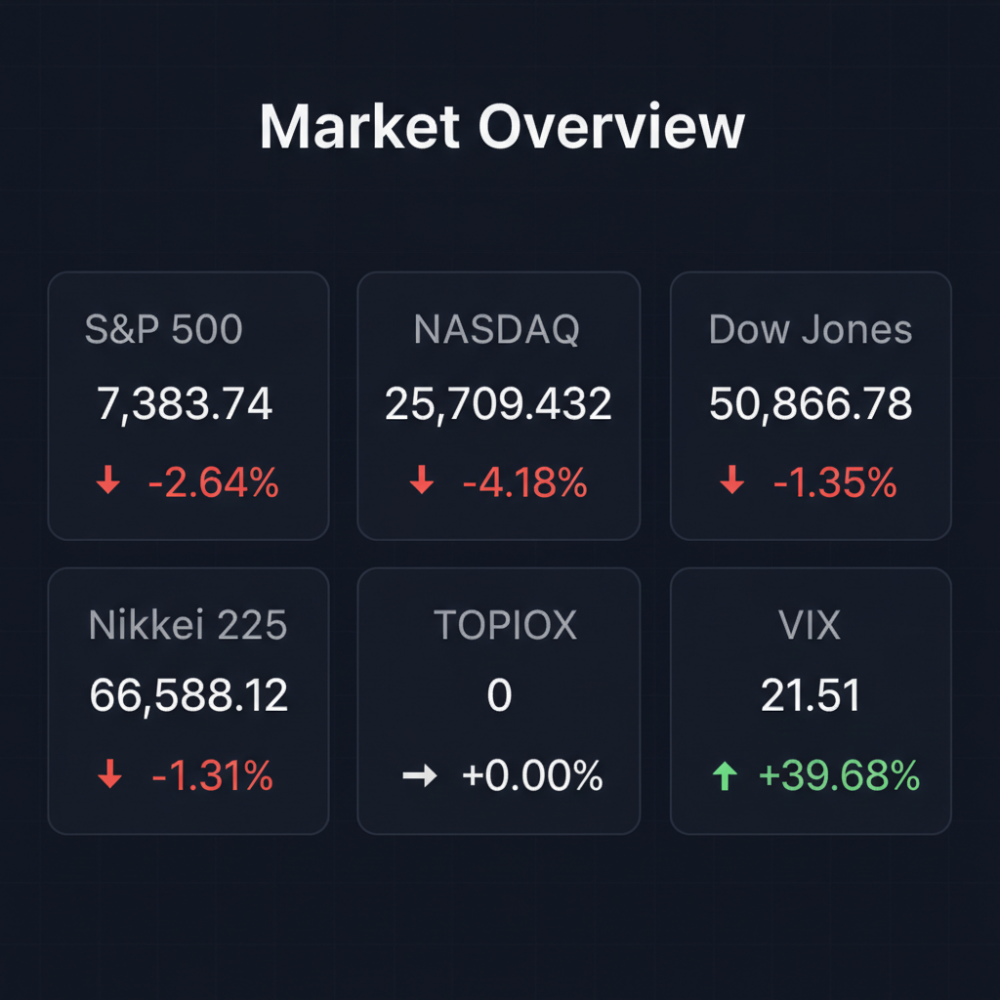

Daily Investment Report - 2026-06-08
Generated: 2026/6/8 7:30:38


投資チームミーティングの結論に基づき、最終レポートを作成いたしました。
1. エグゼクティブサマリー
- 米国市場は地政学的リスクの高まりと利上げ長期化懸念により、テック株主導のパニック的な急落局面を迎えています。
- VIX指数の急騰が示す通り、現在は市場の恐怖心理がピークに達しており、積極的な買い向かいは極めて危険な状況です。
- 全体的な戦略として、成長株からディフェンシブセクターへのシフトを優先し、現金比率を高めてボラティリティの鎮静化を待つことが肝要です。
2. 注目銘柄リスト
今回は調査対象の銘柄が限られていたため、議論された対象について記載します。
強気（買い推奨）
- 該当なし（現在の市場地合いを考慮し、強気推奨の選定を見送りました）
中立（様子見）
弱気（警戒）
- ブラザー工業 (6448) [平均スコア 3.2/10]: 決算後の高値圏での需給過熱感と、ペーパーレス化等の構造的な市場縮小リスクが強く警戒されています。
3. セクター推奨ランキング
1.
ヘルスケア (XLV): 景気変動の影響を受けにくく、ボラティリティが高い相場でのポートフォリオのアンカーとなるため。
2.
生活必需品 (XLP): 不況耐性が高く、配当によるインカムゲインで下落相場を耐え抜くための防御力が高い。
3.
公益 (XLU): 社会インフラとしての安定したキャッシュフローが魅力であり、リスクオフ局面の資金逃避先として適格。
4.
エネルギー (XLE): 地政学リスクによる原油価格上昇が直接的な収益押し上げ要因となるため、限定的なヘッジとして検討。
5.
テクノロジー (XLK): 金利上昇とバリュエーション調整の直撃を受けており、底入れ確認までは最も回避すべきセクター。
4. 今週の注目イベント
- 2026年6月11日（予定）: 米国消費者物価指数（CPI）発表（インフレ動向の再確認）
- 2026年6月12日（予定）: 米国卸売物価指数（PPI）発表
- メジャーSQ（特別清算指数）算出日: 市場の乱高下が予想されるため警戒が必要
5. リスク要因
- 中東情勢の悪化によるホルムズ海峡封鎖やエネルギー供給ショックの発生。
- 米国雇用統計の強さに起因するFRBの利上げ長期化観測とそれに伴う株価バリュエーションの再評価。
- 大型IPO（スペースX等）への資金シフトによる中小型株の流動性低下と需給の悪化。
6. アクションアイテム
- ポートフォリオ内の高PER・高負債銘柄を精査し、リスク許容度を超えたポジションの削減（損切り）を直ちに実行する。
- 市場のパニックが落ち着き、VIX指数が20を下回るまで、新規の買い向かい（ナンピン含む）を凍結する。
- 現金比率を高め、暴落局面でも狼狽売りを避けるための「心の余裕」と「軍資金」を確保する。
7. 米国株インデックス戦略
- 現在の市場環境の評価: 市場は調整の初期段階にある可能性が高いですが、インデックスファンドを今すぐ全売却する必要はありません。ただし、一時的な現金化またはヘッジ（プットオプション購入等）による防御策を強く推奨します。
- 今後1〜3ヶ月の見通し: 金利の高止まりと地政学的リスクにより、指数は戻りの弱い「戻り売り」優勢の展開が想定されます。
- 積立投資への影響: 定期積立については、株価下落局面が「平均取得単価を下げるチャンス」と割り切り、機械的に継続することを推奨します。市場に左右されず継続することが、長期的な勝率を最大化します。
- 注意すべきイベント: 次回のFOMCでの金利見通し、および中東情勢に関するニュースフローがインデックス全体を大きく動かす可能性があります。
- リスクシナリオ: スタグフレーション（供給ショックによるインフレ＋景気後退）の発生により、インデックスがさらに10〜20%下落するシナリオを想定してください。その際は、パニック売りをせずに、ポートフォリオのリバランス（資産配分の調整）のみを検討してください。
Agent Scoring Matrix（Web調査後の合議評価）
各エージェントがWeb調査結果を踏まえて独立に10段階評価した結果です。平均7以上=強気、4〜6.9=中立、4未満=弱気。
| 銘柄 |
ファンダメンタルズアナリスト | テンバガーハンター | マクロエコノミスト | テクニカルストラテジスト | リスクマネージャー |
平均 |
判定 |
| 6448 |
3
高値警戒、構造リスクあり、様子見 | 3
高値圏で成長余地限定的、リスク回避 | 3
高値圏でリスク許容度低、押し目待ち | 3
過熱感強く、構造リスクで上値重い | 4
過熱感あり、構造リスクが顕在化 |
3.2 |
弱気 |
Web Research Results (Google Search Grounding)
エージェントが推奨した中小型株について、Google検索で最新情報を調査した結果です。
6448
ブラザー工業（銘柄コード: 6448）に関する投資判断に必要な最新情報は以下の通りです。
1. 企業概要
ブラザー工業は、ミシン販売を原点とする電機・工業機械メーカーです。主要事業はプリンティング（複合機、プリンター、ラベルプリンター、スキャナー）、家庭用・工業用ミシン、産業用プリンティング機器、工作機械、減速機の製造・販売多岐にわたります。特にデジタル複合機とプリンターの「プリビオ」「ジャスティオ」が主力であり、世界中のSOHO（スモールオフィス・ホームオフィス）市場で高いシェアを誇っています。売上高の多くを海外市場が占めるグローバル企業としての特徴があります。時価総額は2026年6月5日時点で約9,482億円です。業界においては、プリンターなどのデジタル印刷機が主柱であり、ミシンでは首位級のポジションにあります。近年は産業機器分野への注力を進めています。
2. 直近の業績・決算情報
2026年3月期決算では、売上収益が8,934億円（前期比5.3%増）、営業利益が778億円（同15.0%増）、親会社所有者帰属当期利益が676億円（同23.5%増）と、増収増益を達成しました。この好調は主にマシナリー事業の伸長と円安による為替影響が寄与しています。2027年3月期の業績についても、増収増益を見込んでおり、年間100円の配当と自己株式取得を予定しています。
2025年3月期の連結事業構成は、プリンティング・アンド・ソリューションズが62%、ドミノが14%、マシナリーが10%、パーソナル・アンド・ホームが7%、ニッセイが2%、その他が1%となっています。
直近12ヶ月のEPS（1株当たり利益）は248.1円です。次回の決算発表は2026年8月11日の予定です。
3. 最新ニュース・材料
直近1～2週間における個別の重大な発表は見当たりません。しかし、2026年5月22日には、日系大手証券がブラザー工業のレーティングを「強気（Buy）」に据え置き、目標株価を3,900円から4,100円に引き上げたというニュースがありました。
4. アナリスト評価・目標株価
2026年6月7日時点でのアナリストコンセンサスは「買い」となっており、内訳は強気買い2人、買い1人、中立2人です。アナリストの平均目標株価は3,580円で、これは現在の株価から約-5.44%の下落が予想されています。
また、2026年5月21日時点のレーティングコンセンサスは4.2（アナリスト数5人）で「やや強気」の水準、目標株価コンセンサスは3,540円でした。
5. リスク要因
主なリスク要因としては、プリンティング事業への高い収益依存が挙げられます。ペーパーレス化の進展により、プリンティング市場が構造的に縮小するリスクに晒されています。
また、多角的な事業を展開する「複合事業体」であるため、事業間のシナジーが限定的となり、市場から企業価値が割り引かれる「コングロマリット・ディスカウント」の可能性も指摘されています。
成長を期す産業用領域では、専業の強力な競合他社と比較してブランド認知度がまだ十分ではない点も弱みとされています。
その他、各国での貿易政策やエネルギー政策の変更、予期せぬ法制度や規制の改定、競合他社や新興国の地場メーカーの台頭、提携による市場競争の激化などが、業績や財務状況に悪影響を及ぼす可能性があります。
6. 株価の最近の動き
ブラザー工業の株価は、2026年6月3日に年初来高値となる3,860.0円を記録しました。直近のトレンドとしては上昇傾向にあり、2026年6月5日時点では5日前と比較して+0.88%の上昇、20日前と比較して+17.40%の上昇となっています。過去52週間の株価変動は2,371.0円から3,860.0円の範囲で推移しています。